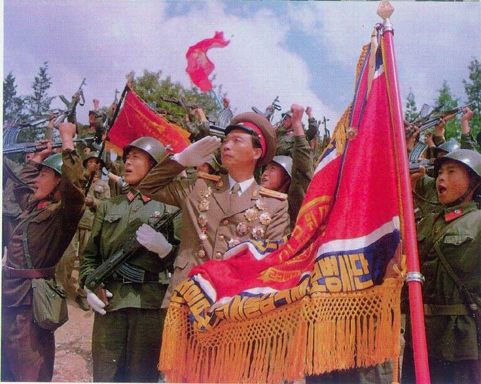

[우리의 주적??]
국방백서에 명시된 우리의 주적은 '인민군과 인민군을 추종하는 무장세력' 이다.
이것은 1990 년대에 들어서 수정된 것으로 원래 우리의 주적은 '북한괴뢰노동당과 추종세력' 이었다고 한다.
용어와 함께 바뀐것은 '북한 주민들이 주적에서 제외되었다' 라는 것이 그들의 설명이다.
그러니까 총을 든 인민군은 주적이지만 총을 들지 않은 인민은 주적이 아니라는 소리다.
마치 상당한 동포애를 갖고 많이 봐준것 같은 소리다.
하지만 생각해보자.
북한의 현 병력 상황은 다음과 같다.
총병력＞（２００３년 12월 말)
현역： １０８만２０００명
예비역： ４７０만명
현역： １０８만２０００명
예비역： ４７０만명
[출처: milpress 님의 블로그 http://blog.empas.com/segye3/651732]
북한의 현재 인구는 2003년 기준 2,250만명이다.
25% 이상의 북한 주민이 인민군인 셈이다.
단순한 계산으로 한가족을 4명 으로 생각할 때 거의 모든 가정에 인민군이 있는거나 마찬가지다.
실제로도 가족의 범위를 좀더 넓히면 4촌 이내에 인민군이 있을 가능성은 상당히 높다.
노동당원들은 무장세력이 아니라도 인민군을 추종하는 세력이기 때문에 주적임이 분명하다.
그렇다면 인민군을 가족으로 둔 북한 주민들도 인민군의 옹호,추종,지원 세력이 아닌가?
빼줄라면 좀 확실히 빼주던가...